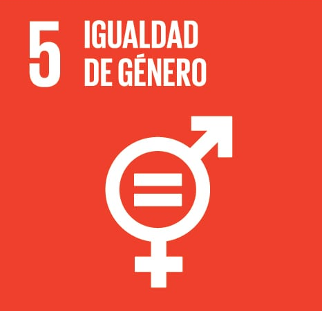
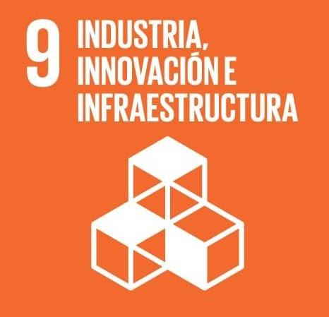
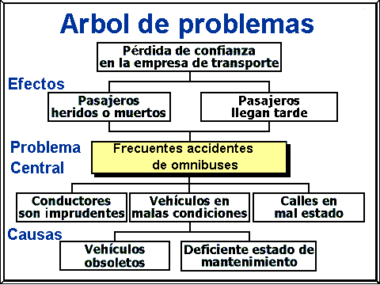
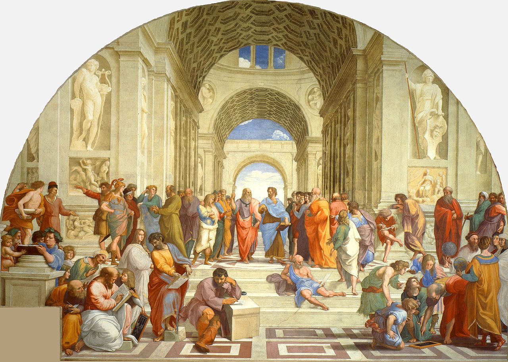
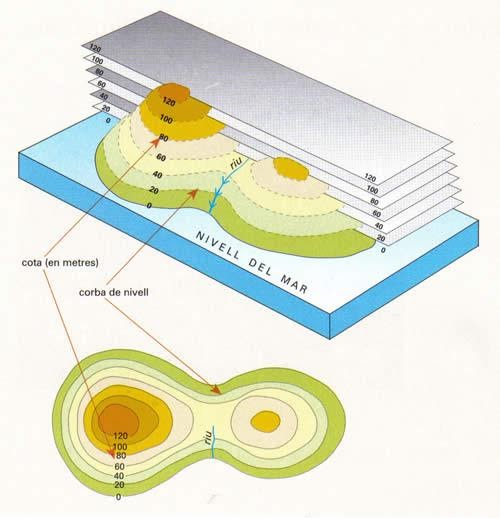
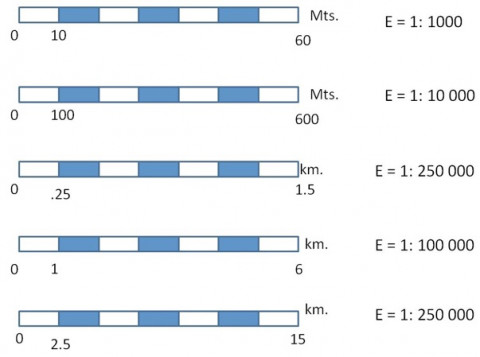

«La ciència pot divertir-nos i fascinar-nos a tots, però és l'enginyeria la que canvia el món»
El Repte a Pocona
El municipi de Pocona, situat a la província de Carrasco (Departament de Cochabamba), es caracteritza per una orografia d'alta muntanya andina amb altituds compreses entre els 2.200 m i més de 3.600 m sobre el nivell del mar.
La gran majoria de la població viu dispersa en petits poblets camperols (ayllus i comunitats rurals). La manca d'infraestructures de comunicació fa que qualsevol emergència sanitària, un part complicat o una malaltia sobtada impliqui hores de camí a peu o en camió fins a l'ambulatori més proper.
La nostra missió serà dissenyar un sistema de comunicacions per ràdioenllaços WiMAX sostingut per torres ventades calculades per vosaltres mateixos, interconnectant les escoles i els centres de salut locals.

Comunitat rural de Pocona (Cochabamba, Bolívia). Fes clic per ampliar.
💡 Preguntes d'Indagació per començar a pensar com enginyers:
- Per què les grans operadores comercials de telefonia mòbil no instal·len antenes en pobles aïllats com Pocona?
- Quina diferència hi ha entre enviar un tècnic a instal·lar una torre comercial i empoderar la comunitat local perquè la construeixi i en faci el manteniment?
- Com ens pot ajudar el Teorema de Pitàgores a estalviar milers d'euros en cables o potència d'antena?
Objectius d'Aprenentatge Competencials
Analitzar situacions de la vida real al Sud global per proposar solucions sostenibles, respectuoses amb la cultura local i ecològicament viables.
Utilitzar el Teorema de Pitàgores, les mediatrius, els circumcentres i el càlcul d'escales cartogràfiques per resoldre problemes topogràfics reals.
Comprendre el comportament dels esforços de tracció i compressió en torres ventades arriostrades davant la força del vent.
Distingir el funcionament dels enllaços direccionals i omnidireccionals WiMAX, i programar microcontroladors per transmetre dades.
Sintetitzar i comunicar les solucions tècniques mitjançant un pòster divulgatiu d'impacte adreçat a la comunitat.
Objectius de Desenvolupament Sostenible (Agenda 2030)

Igualtat de Gènere
Empoderament de dones i nenes a zones rurals: L'aïllament i la manca de comunicació agreugen la vulnerabilitat de les dones, que sovint assumeixen les tasques de cura i salut familiar. Facilitar telemedicina i accés a la informació redueix la mortalitat maternoinfantil i obre noves oportunitats educatives per a les nenes.

Infraestructures Resilients
Xarxes comunitàries i innovació inclusiva: Dissenyarem infraestructures que no depenen de grans inversions corporatives, sinó de solucions enginyoses de baix cost, fàcils de muntar amb materials locals i alimentades per energia solar fotovoltaica.
Materials de Taller i Dibuix Tècnic

Per determinar circumferències de cobertura i traçar mediatrius amb precisió mil·limètrica.

Per dibuixar rectes perpendiculars i paral·leles exactes en els traçats dels perfils de terreny.

Per mesurar distàncies directament sobre els plànols topogràfics en format A3.
Avaluació Inicial: KPSI e-Salut
Abans de començar, valora amb sinceritat què saps sobre telecomunicacions, topografia i cooperació:
Què és la Cooperació Transformadora?
En enginyeria, la cooperació pel desenvolupament no consisteix a "regalar aparells vells" o "instal·lar una solució feta a Europa i marxar". Aquest model clàssic, anomenat assistencialisme, sol fracassar al cap de pocs mesos perquè ningú al poble sap com reparar les avaries ni hi ha peces de recanvi.
El model que apliquem a Pocona és el de la cooperació horitzontal i transformadora:
La comunitat decideix quines són les seves prioritats reals (per exemple, connectar l'ambulatori i l'escola abans que altres serveis).
Fem servir equips WiMAX robustos de baix consum elèctric que poden funcionar amb plaques solars i bateries de 12V fàcils de trobar.
Formem joves de la comunitat perquè sàpiguen reorientar una antena, canviar un fusible o reiniciar un encaminador sense dependre de ningú.
La Veu del Terreny: Mirtha Téllez (ONG Mosoj Kausay)
Mirtha Téllez dirigeix l'ONG boliviana Mosoj Kausay ("Vida Nova" en idioma quítxua). Coneix perfectament la duresa del dia a dia a les comunitats de muntanya de Cochabamba.
Guia de Visualització per a l'Alumnat:
Mentre mireu els vídeos següents, preneu notes al vostre quadern sobre:
- Quines dificultats tenen els metges rurals quan no tenen senyal de ràdio davant d'una urgència?
- Quin paper juguen les dones de la comunitat en l'organització de les tasques comunitàries?
Accés a les Comunicacions a Llatinoamèrica
L'Informe Tècnic Inicial de Camp
Abans de dissenyar circuits o tirar cables, cal estudiar el terreny social i humà. L'equip tècnic enviat a Pocona ha documentat 4 àmbits clau:
Pocona es troba a 140 km de la ciutat de Cochabamba, en una depressió envoltada de serralades andines que superen els 3.400 m, bloquejant qualsevol senyal cel·lular de les valls veïnes.
El municipi té diversos cantons i sub-comunitats com Chimboata i Chillijchi, separades per barrancs i rius que a l'època de pluges queden completament incomunicades per terra.
Mentre les capitals departamentals gaudeixen de fibra òptica, el 65% de les zones rurals no tenen accés a banda ampla degut a l'alt cost d'estendre cablejats per la muntanya.
El centre de salut només disposa d'un metge general i una infermera. Davant de complicacions mèdiques no poden fer consultes d'urgència a l'hospital central de referència.

Distribució geogràfica de les comunitats i nuclis poblacionals de Pocona. Fes clic per ampliar.
La Metodologia de l'Arbre de Problemes
Un Arbre de Problemes és una tècnica de pensament crític i sistèmic imprescindible en qualsevol projecte d'enginyeria social. Ens ajuda a evitar un error molt comú: confondre un símptoma superficial amb la causa real.
És la carència o situació negativa nuclear que volem solucionar. Ha de ser una frase clara i mesurable (ex. «Aïllament en telecomunicacions i manca de comunicació sanitària a les comunitats rurals de Pocona»).
Per què passa això? Relleu abrupte que actua de pantalla, manca d'alimentació elèctrica de xarxa als cims, manca d'inversió comercial per baixa densitat de població.
Què passa si no ho solucionem? Retards mortals en el trasllat d'emergències mèdiques, aïllament escolar, emigració forçosa de la joventut cap a la ciutat.

Estructura lògica de l'Arbre de Problemes: Arrels (Causes) → Tronc (Problema) → Branques (Efectes). Fes clic per ampliar.
La Geometria: Fonament del Pensament i la Tècnica
«ἀγεωμέτρητος μηdeìς εἰσίτω»
Aquesta màxima gravada a l'entrada de l'Acadèmia de Plató a Atenes recordava que sense saber geometria és impossible fer ciència, arquitectura o enginyeria. Sòcrates explicava que la geometria no és només càlcul fred, sinó l'aprenentatge de l'harmonia, la proporció i l'ordre en l'espai.
A Pocona farem servir la geometria per un propòsit vital: salvar vides trobant la ubicació òptima per a les antenes repetidores.

La geometria com a llenguatge de l'harmonia i la construcció. Fes clic per ampliar.
Arrossega les dues torres (Torre A en blau i Torre B en violeta) sobre el mapa topogràfic. Observa com es traça automàticament el tall del terreny i el gràfic del perfil alçat, comprovant si hi ha línia de visió directa (*Line of Sight*) o si un cim intermedi talla el senyal de ràdio!
Com interpretar les Corbes de Nivell i les Escales
Corbes de Nivell (Isohipses)
Una corba de nivell és la línia que uneix tots els punts que es troben a la mateixa altitud respecte del nivell del mar (cota zero).
- Corbes Mestres: Línies més gruixudes amb la xifra d'altitud gravada (cada 100 metres).
- Corbes Secundàries: Línies fines intermèdies (cada 20 metres).
- Pendent: Com més juntes estan les corbes, més vertical i escarpat és el terreny. Si estan molt separades, és una vall plana.

Lectura de pendents segons la separació de les isohipses.
L'Escala Cartogràfica
L’escala expressa la raó matemàtica de reducció entre el paper i el món real.

Comparació d'escala numèrica (1:10.000) i escala gràfica.

Mètode clàssic per aixecar un perfil topogràfic a mà amb paper mil·limetrat.
Modifica la distància horitzontal i les altituds de les dues estacions. Observa com es construeix el triangle rectangle en 2.5D, l'angle d'elevació que ha de tenir l'antena parabòlica ($\theta$) i el temps exacte que triga l'ona electromagnètica a recórrer la distància geomètrica real!
Mediatriu i Circumcentre en la Ubicació del Repetidor
Si hem de connectar tres pobles diferents (Pocona, Chimboata i Chillijchi) amb una sola torre que es trobi exactament a la mateixa distància de tots tres, la geometria ens dóna la solució immediata: el circumcentre.
Compara el comportament d'una Antena Direccional (lòbul estret, llarg abast, alta directivitat) enfront d'una Antena Omnidireccional (cobertura 360°, abast reduït per dispersió $1/r^2$). Gira l'antena o canvia'n la potència i comprova la intensitat de senyal (dBm) que reben l'Ambulatori, l'Escola i el Poble!
Dossiers Tècnics de Viabilitat (Cas 1 i Cas 2)
Cas 1: Estudi de Viabilitat de l'Enllaç Directe
Cas 2: Estudi d'Obstacles i Posició del Repetidor
Experimenta amb la velocitat del vent, l'angle d'ancoratge dels tirants i la tensió dels cables. Visualitza en temps real els vectors de força: la força d'empenta del vent ($F_{vent}$), la tracció dels cables ($T$) i la forta compressió axial a la base de la torre ($N$). Comprova si l'estructura resisteix o si pateix risc de col·lapse per pandeig!
Com funciona l'Arriostrament en Enginyeria?
El Fust (Gelosia Triangular)
El cos central de la torre està format per tres barres d'acer soldades en gelosia triangular (*truss*). El triangle és l'únic polígon indeformable de la geometria: quan rep una força, les seves barres només treballen a tracció o a compressió pura, sense doblegar-se.
Els Vents (Tirants d'Acer)
Una torre alta i estreta cauria immediatament per la força del vent si no tingués vents. Els cables d'acer agafen la torre des de diferents alçades i transfereixen la força del vent cap als ancoratges massissos de formigó clavats a terra.
El Perill del Pandeig (*Buckling*)
Quan el vent bufa molt fort, els tirants aguanten la torre perquè no es tombi, però a canvi tiren cap avall amb una força enorme. Això fa que la base de la torre suporti una càrrega de compressió gegantina.
Si el fust no és prou robust o els cables no estan ben equilibrats, la torre pot patir pandeig (una flexió sobtada cap a un costat) i trencar-se pel mig.
Vídeos Reals de Muntatge
Plànols i Esquemes Tècnics de Construcció
Formulari de Posada en Marxa: Reconnectem amb Pocona
Valideu els protocols de xarxa i comproveu la connectivitat del vostre equip abans d'iniciar la transmissió de telemetria:
1. Sistemes de Comunicació amb Infrarojos
Com es transmet la informació a través de la llum? En aquest mòdul de laboratori utilitzem parelles de díodes LED emissors d'infrarojos (longitud d'ona de 940 nm) i fototransistors receptors. Codifiquem el missatge en codi binari mitjançant modulació per amplada de pols (PWM), de manera idèntica a com funcionen els comandaments a distància o les connexions per fibra òptica.
2. Pocona: Xarxa de Comunicacions
3. Prova de Programació i Robòtica
KPSI Justificat: Pocona
Comprova quant has progressat des del qüestionari del primer dia! Emplena el KPSI final justificant cadascuna de les teves respostes amb les evidències de les activitats de topografia, Pitàgores i càlcul de torres que has après:
El Pòster Divulgatiu del Projecte
En enginyeria és tan important saber resoldre el problema tècnic com saber-lo explicar a la ciutadania. Cada equip prepararà un pòster científic divulgatiu en format DIN A2 seguint aquests 3 eixos:
Descripció del municipi de Pocona, el diagnòstic de l'Arbre de Problemes i els ODS implicats (ODS 5 i 9).
El perfil topogràfic amb visió neta (LoS), el càlcul de Pitàgores de la distància de ràdio i l'estructura de la torre ventada.
Com canvia la vida de la gent gràcies a la telemedicina a l'ambulatori i l'accés a recursos educatius a l'escola.